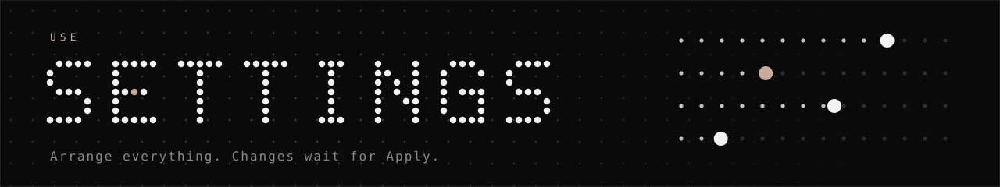

Settings app
Arrange the bar, widgets, tiling and colours without editing a file. It edits your real config, so you can still change anything by hand.
How it behaves
- Changes wait for Apply. The Apply button in the bottom pill lights up when there is something to apply, and has a small cross to discard it.
- Search (
Ctrl K) finds any page, widget or option. Results show the page, a short description, and scroll to the setting. - Every option has a description, taken from YASB's own documentation.
- Sliders move in steps of 5, and your files are written without losing comments or order.
The pages
| Page | What it does |
|---|---|
| Home | The switches you reach for: scroll hotkeys, komorebi, Lucent. |
| Bar | Where the bar sits, its size, padding, which widgets go left, centre and right. |
| Widgets | Every widget as its own card: options, label and icon size. |
| Komorebi | Windows, spacing, borders, transparency, animation. |
| Tacky Borders | Border colours (single or gradient), animation, effects. |
| Wallpaper | Pick a wallpaper and the lock screen. It waits for Apply. |
| Lucent | The accent, softness, the per-program cards and the monochrome theme. |
| About | Versions, sounds, and shortcuts to your config files. |
Files it edits
The About page opens each of them: the YASB config.yaml and styles.css, komorebi's komorebi.json, the Tacky Borders config.yaml, and the app's own settings.txt (in %LOCALAPPDATA%\yasb-settings).
Bento is MIT licensed. komorebi, YASB and the other projects it builds on have their own licences: credits and licences.